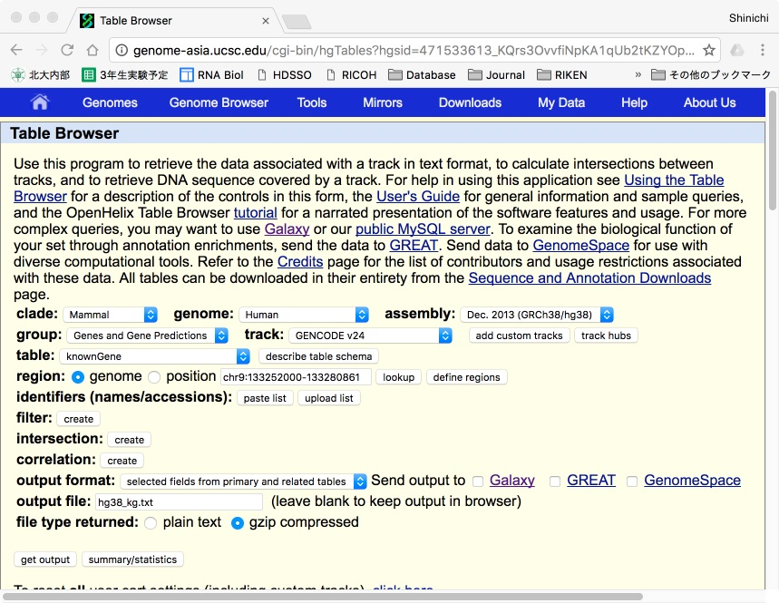
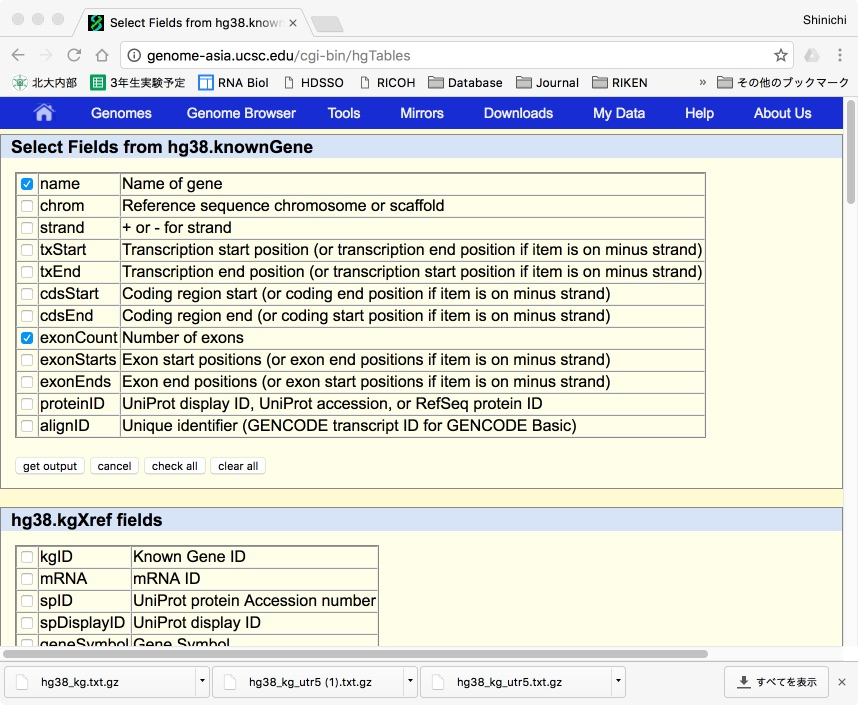
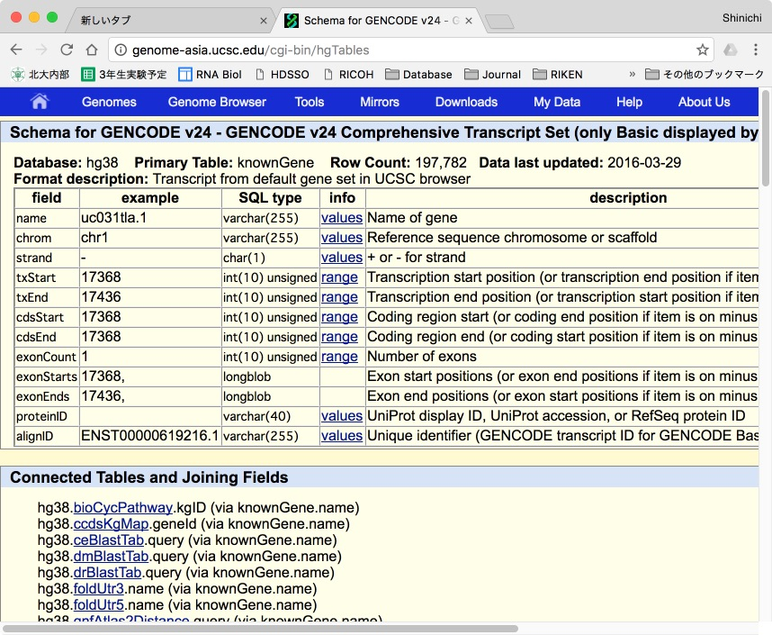

とはいえ、NGS解析で出てきたデータをいざグラフにしたり、ちょっとひねった解析をしようとすると、途端にMoistureからWetどころかWaterぐらいまで戻ってしてしまうのがベンチ屋の悲しいところ。先日、遺伝子発現量の変化とmRNAの長さやexonの数、5'UTRや3'UTRの長さとの関連を調べようかなと思ったのですが、Cuffdiffから出てきたgene_exp.diffのファイルをExelで開いたはいいけれど、さて、えーっと、どうしましょうかね。ということで、学生さんと一緒にフリーズしてしまいました。要はそのExelの表に、転写産物の長さやエクソンの数などの情報を入れた列を作れば良いだけなのですが、これが意外と難しいんですね。確かにUCSCのTable Browserで転写産物ごとのエクソン数が入ったデータは取ってこれますが、転写産物の開始点と終了点はゲノム上の位置。単純に引き算したら、イントロンを含む遺伝子長になってしまいます。また、CDS start/endなどの情報もありますが、UTRの長さを出そうとすると、転写開始点から引き算して、イントロンの部分を除いて、、、と、かなり面倒くさそうです。さてどうしたもんかいのうと途方に暮れていたところ、救世主あらわる。最近理研の准主任で帰国された岩崎信太郎さんからRを使ったファイルの作成法を教わったので、こちらにメモとして残しておきます。いやあ、なんか、魔法を見ているようでした。
まずは、おなじみ、UCSC Table Browserから遺伝子リストのデータを落としてきます。

assemblyは最新の情報が良いのでhg38
groupはこの手の情報が入っているGenes and Gene Predictions
trackはなるべくたくさんのアノテーションが付いているものということでGENCODEv24
tableは、まずは遺伝子リストを取りたいということでknownGeneを選びます。
regionはゲノム全体の情報なのでgenomeを選び、 output formatでは遺伝子名とエクソン数だけわかれば良いので、pull downメニューでselected fields...を選んでみます。
output file名は任意。ここではhg38_kg.txtにしました。
file type returnedはダウンロードの時間を短縮するためにgzip compressedにして、
[get output]ボタンをプッシュ！
そうすると、どの情報を選ぶかについてのダイアログが出てきます。

nameとexonCountにチェックを入れて、も一回 [get ouput]ボタンをプッシュ！ 程なく.gzファイルがダウンロードされてくるので、それをダブルクリックすると解凍されてhg38_kg.txtファイルが出てきます。
ちなみに、各trackにどのような情報が含まれているかは [describe table schema] ボタンを押せば簡単にチェックすることができます。例えばknownGeneを見ると、、、

うん。転写産物名とエクソン数が入っている。でも、転写産物の長さやUTRの長さなどの情報は入っていません。これを後からRで付け加えていきます。でもどうやって？？？ここでいったん先ほどのtable browserに戻って、今度はtableのpull downメニューでknownGeneMrnaを選びます。このファイルをhg38kg_seq.txtとして保存。ここには、各転写産物の配列がfasta形式タブ区切りテキスト*で入っています。その配列の長さをカウントしてやれば良い、という算段です。
*2017/1/26追記
UCSCからダウンロードしたファイルはfasta形式でないので、変換しないといけないですね。一番手っ取り早いのはTerminalに行ってawkコマンドを使うやり方でしょうか（seqanswerを参考）。最初にsedコマンドでヘッダーの行を削除しています。行の削除はテキストエディットの方が楽かな。。。rnacintosh LC475さんご指摘ありがとうございました。
cd /Users/Nakagawa_imac/Dropbox (RNA_Biol)/blog
cat hg38_kg_seq.txt|sed -e '1,1d' > hg38_kg_seq_del.txt
awk '{print ">"$1"\n"$2}' hg38_kg_seq_del.txt > hg38_kg_seq_fa.txt
5' UTRの長さはどうやって取ってくるのでしょう。実は、なんと、tableのpull downメニューの中にfoldUtr5というのがあって、ここには各転写産物の5'UTRの配列と二次構造が入っているのですね。この配列の長さをカウントしてやればオーケーというわけです。というわけで、tableのpull downメニューでfoldUtr5を選び、hg38_kg_utr5.txtとして保存します。3'UTRの場合、今度はtableのpull downメニューからfoldUtr3を選んで、hg38_kg_utr3.txtとして保存します。
さて、これで材料として、
hg38_kg.txt
hg38_kg_seq_fa.txt
hg38_kg_utr5.txt
hg38_kg_utr3.txt
が揃いました。これらのデータから、必要な情報をRを使って抽出し、まとめファイルを加工していきます。ここから先はRのコンソールでの操作となります。
まずは作業ディレクトリの設定。僕は⌘Dでやることが多いですが、岩崎さんはsetwdコマンドを使ってます。うーむ。この辺からして違うんだなあ、、、
> setwd("~/Dropbox (RNA_Biol)/blog")
次に、文字列の操作などに便利なライブラリーstringrとfasta形式のファイルを読み込むのに便利なライブラリーBiostringsを準備します。これらがインストールされていない場合はRの「パッケージとデータ」メニューからインストールしておきます。
> library(stringr) > library(Biostrings)
さてさて、ここからRの魔法が始まります。
ダウンロードしてきたファイルはタブ区切りのテキストファイルですが、これをread.delimコマンドを使って読み込んでいきます。hg_38というデータフレームに遺伝子リストとエクソン数のファイルを取り込むのが以下のコマンド。とりこんだらheadコマンドを使って中身を確認していきます。
> #データフレームhg38_kgに遺伝子リスト＆エクソン数を読み込み
> hg38_kg<-read.delim("hg38_kg.txt")
> head(hg38_kg) #中身の確認
X.name exonCount
1 uc031tla.1 1
2 uc057aty.1 3
3 uc057atz.1 2
4 uc031tlb.1 1
5 uc001aak.4 3
6 uc057aua.1 2
次に、readDNAStringSetコマンドを用いて、hg38_seqというデーターフレームにfasta形式のhg38_kg_seq_fa.txtを読み込みます。headで確認して見るとあら不思議。widthという列が自動的に追加されて転写産物の長さが勝手に計算されてます！
> #データフレームhg38_seqにfasta形式の転写産物リストを読み込み
> hg38_seq<-readdnastringset("hg38_kg_seq_fa.txt")
> head(hg38_seq) #中身の確認
A DNAStringSet instance of length 6
width seq names
[1] 68 TGTGGGAGAGGAACATGGGCTCAGGACAGCGGGTGTCAGCTTGCCTGACCCCCATGTCGCCTCTGTAG uc031tla.1
[2] 712 GTGCACACGGCTCCCATGCGTTGTCTTCCGAGCGTCAGGCCG...TTGGACTTCCAAGCCTCCAGAACTGTGAGGGATAAATGTAT uc057aty.1
[3] 535 TCATCAGTCCAAAGTCCAGCAGTTGTCCCTCCTGGAATCCGT...GCCTCCAGAACTGTGAGGGATAAATGTATGATTTTAAAGTC uc057atz.1
[4] 138 GGATGCCCAGCTAGTTTGAATTTTAGATAAACAACGAATAAT...ATTATTGGTTGTTTATCTGAGATTCAGAATTAAGCATTTTA uc031tlb.1
[5] 1187 CACACAACGGGGTTTCGGGGCTGTGGACCCTGTGCCAGGAAA...TACAGCAACTGCCTTCTTTTAATTAAAACACTCCTGCTGCT uc001aak.4
[6] 590 GGGGTTTCGGGGCTGTGGACCCTGTGCCAGGAAAGGAAGGGC...CAAATTCTTGTAAGTATTAAACATTGTATATGTATTTTGAA uc057aua.1
今度は、先ほどの転写産物のIDとエクソン数の情報が入ったhg_38と合わせ、転写産物名（ID）、エクソン数（exon）、転写産物の長さ（length）のラベルを持った新しいデータフレームhg38_infoを作ってみます。data.frameというコマンドを使うと簡単に新しいデータフレームを作れるんですね。文法は、#Frame_name <- data.frame(#column1_name=data, #column2_name=data,...)で、dataはデータフレーム名をそのまま使い、列の指定には$を使えば良いようです。なんと簡単な。Excelだと何やかんやペタペタとコピペしないといけないのをたった一言ですませられるとは恐るべし。家に帰ったら「フロ」みたいなもんですね。headで確認すると、、、
> #遺伝子名の列として"ID"、エクソン数の列として"exon"、転写産物の長さの列として"length"というラベルを持つデータフレームhg38_infoを作る > hg38_info<-data.frame(id=hg38_kg$x.name,exon=hg38_kg$exoncount,length=width(hg38_seq))> head(hg38_info) #中身の確認 ID exon length 1 uc031tla.1 1 68 2 uc057aty.1 3 712 3 uc057atz.1 2 535 4 uc031tlb.1 1 138 5 uc001aak.4 3 1187 6 uc057aua.1 2 590
これは絶対やってはいけないミスでした。データの行の並びは異なるデータフレーム間で必ずしも一致しているとは限らないので、統合する場合は、行数が同じ場合でも、必ずmatchなりmergeなり、紐付けをするのが鉄則。ここでは、データフレームの形式を同じにするためにhg_38の中身をdata.frameコマンドを使って並べ直し、次のエントリーで解説したPPAPならぬmergeコマンドを使って二つのIDを紐付けすることでエクソン数の入ったデータと長さの入ったデータを統合します。
> #hg38seqの中身をhg38_seq_dataに変換
> hg38_seq_data<-data.frame(ID=names(hg38_seq),length=width(hg38_seq))
> head(hg38_seq_data)
ID length
1 uc031tla.1 68
2 uc057aty.1 712
3 uc057atz.1 535
4 uc031tlb.1 138
5 uc001aak.4 1187
6 uc057aua.1 590
> #hg38_seq_dataとhg38_kgを統合したデータフレームhg38_infoを作る
> hg38_info<-merge(hg38_seq_data, hg38_kg, by.x="ID", by.y="X.name", all=T)
> head(hg38_info) #中身の確認
ID length exonCount
1 uc001aak.4 1187 3
2 uc001aal.1 918 1
3 uc001aaq.3 696 4
4 uc001aar.3 457 3
5 uc001abp.3 874 6
6 uc001abt.5 1807 3
今度は、hg38_utr5というデータフレームにhg38_kg_utr5.txtの情報を読み込んでいきます。
> #データフレームhg38_utr3に5' UTRの情報を読み込む
> hg38_utr5<-read.delim("hg38_kg_utr5.txt")
> head(hg38_utr5) #中身の確認
X.name
1 uc001abw.2
2 uc001abz.5
3 uc001aca.3
4 uc001acd.4
5 uc001ace.4
6 uc001acf.4
seq
1 CCAGCAGAUCCCUGCGGCGUUCGCGAGGGUGGGACGGGAAGCGGGCUGGGAAGUCGGGCCGAGGGAAAAGUCUGAAGACGCUU
2 CGCGCGGCAUUCUGGGGCCGGAAGUGGGGUGCACGCUUCGGGUUGGUGUC
3 AGUGAGCGACACAGAGCGGGCCGCCACCGCCGAGCAGCCCUCCGGCAGUCUCCGCGUCCGUUAAGCCCGCGGGUCCUCCGCGAAUCGGCGGUGGGUCCGGCAGCCGA
4 GGGACCCAGACUUGCCGACCUGUACGACUCUGGCC
5 CCAGACUUGCCGACCUGUACGACUCUGGCC
6 CCAGACUUGCCGACCUGUACGACUCUGGCC
次に、hg38_utr5に"length"という列を追加して、hg38_utrのseqの列にある配列の長さをstr_lengthというコマンドを使ってカウントしたものを入れていきます。なんだかとっても複雑そうですが、これもRだとたった1行で表現できるんですね。「フロ」に続いて「メシ」みたいなもんです。中身を確認すると、フォーマットの関係でちょっと見にくいですが、確かにlengthの項目が追加されています。列の追加はデータフレーム名["新しい列の名前"]<-新しい列に入れるデータで良いんですね。
> #データフレームhg38_utr5に"length"という列を追加し、"seq"の列にある配列の長さをカウントした数を入れる
> hg38_utr5["length"]<-str_length(hg38_utr5$seq)
> head(hg38_utr5) #中身の確認
X.name
1 uc001abw.2
2 uc001abz.5
3 uc001aca.3
4 uc001acd.4
5 uc001ace.4
6 uc001acf.4
seq length
1 CCAGCAGAUCCCUGCGGCGUUCGCGAGGGUGGGACGGGAAGCGGGCUGGGAAGUCGGGCCGAGGGAAAAGUCUGAAGACGCUU 83
2 CGCGCGGCAUUCUGGGGCCGGAAGUGGGGUGCACGCUUCGGGUUGGUGUC 50
3 AGUGAGCGACACAGAGCGGGCCGCCACCGCCGAGCAGCCCUCCGGCAGUCUCCGCGUCCGUUAAGCCCGCGGGUCCUCCGCGAAUCGGCGGUGGGUCCGGCAGCCGA 107
4 GGGACCCAGACUUGCCGACCUGUACGACUCUGGCC 35
5 CCAGACUUGCCGACCUGUACGACUCUGGCC 30
6 CCAGACUUGCCGACCUGUACGACUCUGGCC 30
同様のことを3'についても行います。長くなるのでここではheadを省略してます。
#データフレームhg38_utr3に5' UTRの情報を読み込む
hg38_utr5<-read.delim("hg38_kg_utr5.txt")
#データフレームhg38_utr5に"length"という列を追加し、"seq"の列にある配列の長さをカウントした数を入れる
hg38_utr5["length"]<-str_length(hg38_utr5$seq)
さて、お次は転写産物の名前とエクソンの数、長さが入ったhg_infoに、utr5という列を追加し、先ほどのhg38_utrのlength情報を追加するのですが、5'UTRはコーディング転写産物にしかありません。すなわち、行の数が違うので、単純に「dhg_info["XXXX"]<-XXXX$XXXX」の技は使えません。そこで登場するのがmatch関数。IDの転写産物の名前が一致するときだけ値を入れる、という作業が、また、たった1行でできてしまう！すごい、すごいよR！これは「ネル」みたいなもんですかね。
> #データフレームhg_infoに"utr5"という列を追加し、hg_infoの"ID"の列とhg38_utr5の"X.name"の列の値が一致する時にhg38_utr5の"length"の列の値を入れる。
> hg38_info["utr5"]<-hg38_utr5$length[match(hg38_info$ID,hg38_utr5$X.name)]
> head(hg38_info) #中身の確認
ID exon length utr5
1 uc031tla.1 1 68 NA
2 uc057aty.1 3 712 NA
3 uc057atz.1 2 535 NA
4 uc031tlb.1 1 138 NA
5 uc001aak.4 3 1187 NA
6 uc057aua.1 2 590 NA
同様に3'UTRの長さの情報も入れて、
> #データフレームhg_infoに"utr3"という列を追加し、hg_infoの"ID"の列とhg38_utr3の"X.name"の列の値が一致する時にhg38_utr3の"length"の列の値を入れる。
> hg38_info["utr3"]<-hg38_utr3$length[match(hg38_info$ID,hg38_utr3$X.name)]
> head(hg38_info) #中身の確認
ID exon length utr5 utr3
1 uc031tla.1 1 68 NA NA
2 uc057aty.1 3 712 NA NA
3 uc057atz.1 2 535 NA NA
4 uc031tlb.1 1 138 NA NA
5 uc001aak.4 3 1187 NA NA
6 uc057aua.1 2 590 NA NA
最後はwrite.tableコマンドを使って、情報のファイルを書き出して終了！！
> #テーブルの書き出し > write.table(hg38_info,"hg38_info.txt",quote=F,col.names=T, row.names=F,sep="\t")
というわけで、「フロ」「メシ」「ネル」だけで、転写産物のID名、長さ、エクソン数、UTRの長さの情報が揃った表を作ることができました。一連のRのコンソールの命令文を含め、作成したファイルは、下の方のまったく押してもらおうという気合いの感じられない添付ファイルのリンクのところからダウンロードできます。
いやあ、Rはすごいですね。岩崎さんとRのやり取りはまるで円熟期に入った夫婦のような会話でした。とてもても実生活では怖くて真似できませんが、次回は、この表を元にグラフを作るやり方について書いてみます。

 2020
2020